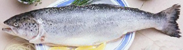

Forelle im Ofen
5 von 6die kartoffeln in scheiben schneiden und mit etwas olivenöl, salz und pfeffer im ofen ca. 15. min vorgaren.
inzwischen die forellen mit kräutern und zitrone stopfen. (dill, petersilie, thymian etc.) mit etwas olivenöl beträufeln und mit den kartoffeln im ofen ca. 15. min garen. salz und pfeffer nach belieben.
